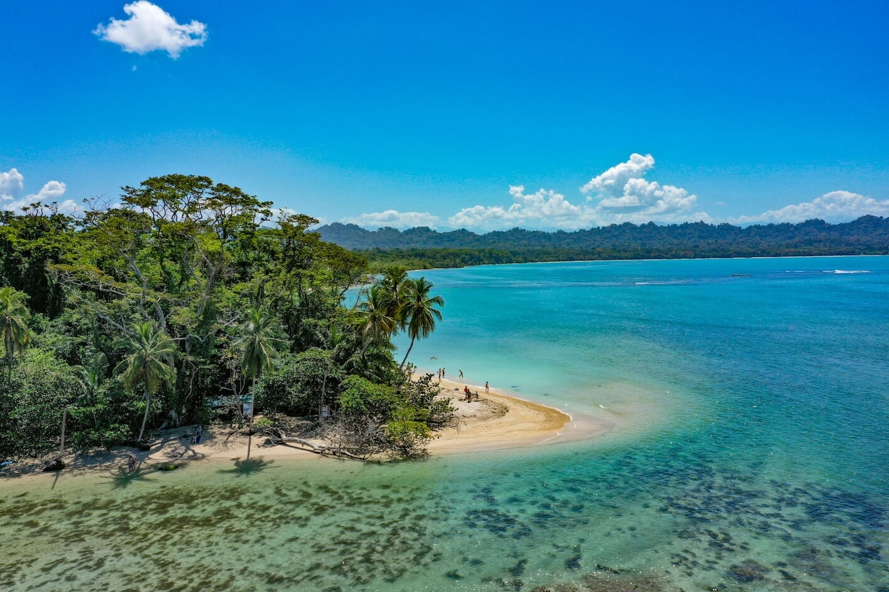
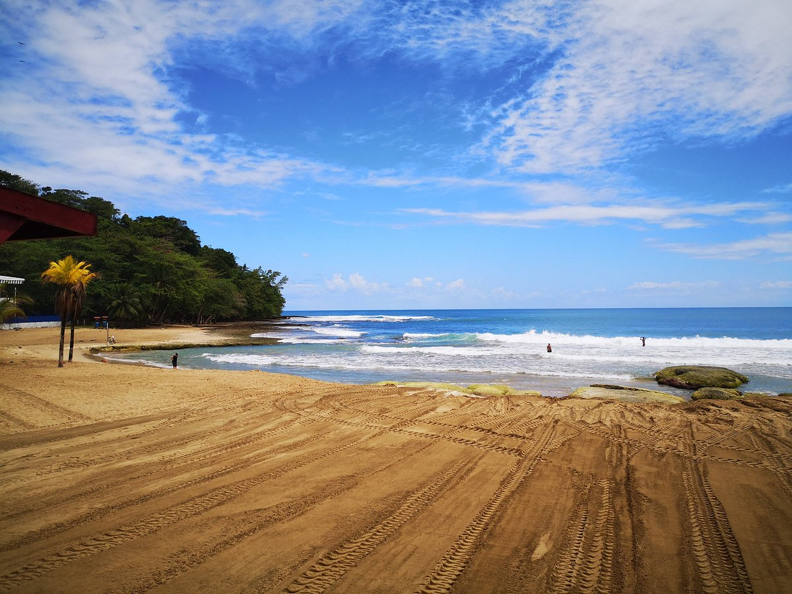
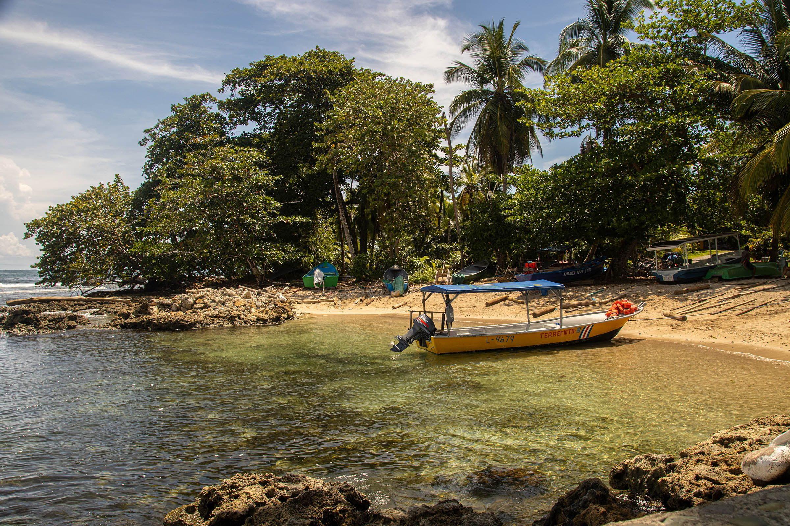
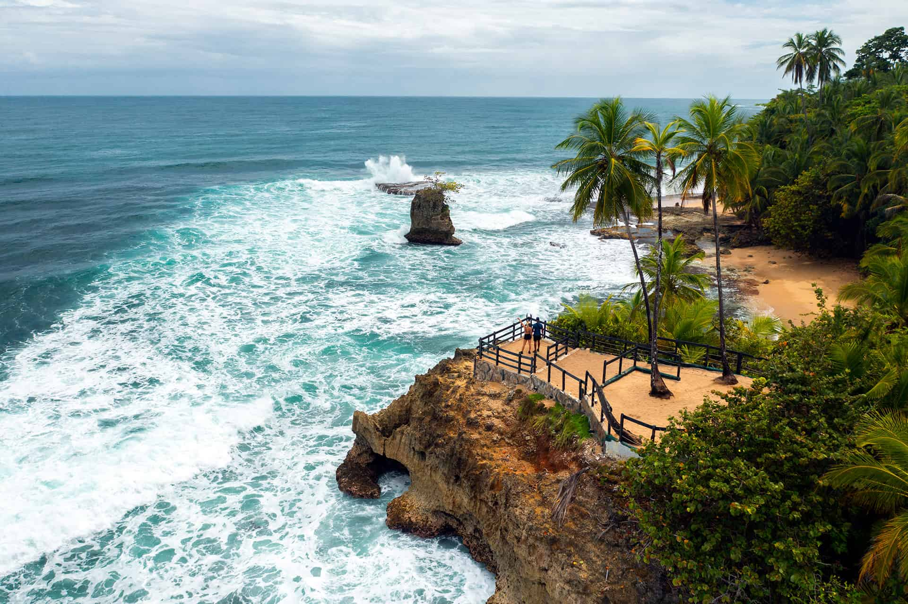
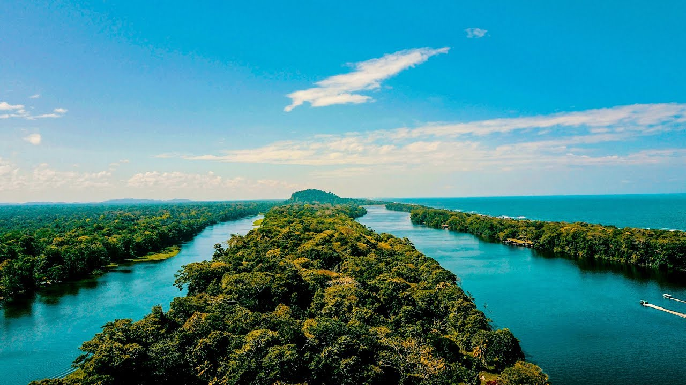
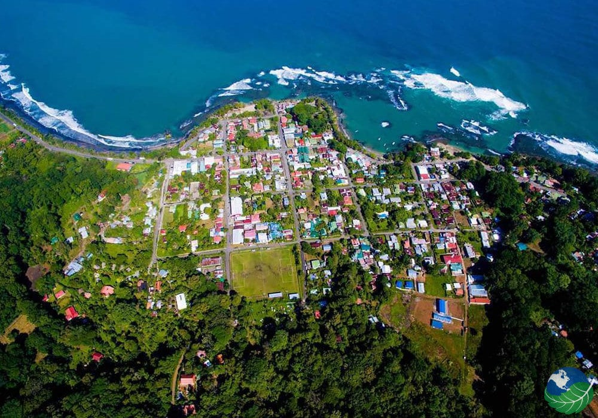

Parque Nacional Cahuita
Recomendado
======= >>>>>>> Stashed changesSnorkel, caminatas fáciles y vida silvestre. Ideal para un primer día relajado.
Ver Cahuita en Google MapsPuerto Viejo, Cahuita, Manzanillo y Tortuguero: arma tu ruta perfecta por el Caribe costarricense.
<<<<<<< Updated upstream


======= >>>>>>> Stashed changesSnorkel, caminatas fáciles y vida silvestre. Ideal para un primer día relajado.
Ver Cahuita en Google Maps
=======Ambiente caribeño, cafés y playas como Cocles y Playa Negra. Moverse en bici es lo más práctico.

=======Senderos costeros y calas escondidas; excelente para observar aves y monos.

=======Canales en selva tropical. En temporada, desove de tortugas (tours autorizados).

| Día | Zona | Actividad |
|---|---|---|
| 1 | Limón centro → Puerto Viejo | Paseo en bici al atardecer |
| 2 | Cahuita | Sendero costero + snorkel |
| 3 | Puerto Viejo | Playa Cocles / surf |
| 4 | Manzanillo | Refugio y miradores |
| 5 | Bribri | Cascadas y tour cultural |
| 6 | Tortuguero | Canales y desove |
| 7 | Regreso | Mercado local y despedida |
| 1 | Limón centro → Puerto Viejo | Traslado, paseo en bici al atardecer |
| 2 | Cahuita | Sendero costero + snorkel (condiciones mediante) |
| 3 | Puerto Viejo | Playa Cocles / surf para principiantes |
| 4 | Manzanillo | Refugio Gandoca–Manzanillo y miradores |
| 5 | Bribri | Cascadas y experiencia cultural (tour comunitario) |
| 6 | Tortuguero | Canales en bote; en temporada, tour de desove |
| 7 | Regreso | Mercado local en Limón y despedida |
| Rubro | Económico | Estándar | Premium |
|---|---|---|---|
| Alojamiento | 210 | 420 | 980 |
| Transporte local | 120 | 220 | 400 |
| Comidas | 140 | 280 | 560 |
| Actividades | 120 | 260 | 520 |
Recibe itinerarios personalizados y tips en tu correo.
Recibe itinerarios personalizados y tips del Caribe de Limón en tu correo.